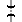

This line was to provide a short cut between Maldon on the Main South (near Picton) and Dombarton at the foothills of the Illawarra plateau, near Port Kembla.
Construction began but was not completed. The two major structures on the line are the partially-complete bridge over the Cordeaux River near Maldon and the incomplete Avon Tunnel near Dombarton. The bridge is missing the middle section. The Avon Tunnel, if completed, would have been the longest in Australia, at 4km.
This line was to be electrified at 25kV AC rather than the 1500V DC like the rest of the electrified network. Stanchions were erected on the Unanderra - Moss Vale line between Unanderra and Dombarton for this purpose.
| km | Name | Facility | Status | Opened | Closed | Location | Photos | Diagrams | |||||||||
|---|---|---|---|---|---|---|---|---|---|---|---|---|---|---|---|---|---|
| Jct (Dombarton) | Junction | Closed | - | - | - | - | |||||||||||
|  | Avon Tunnel | Tunnel | Closed | - | - | - | - | ||||||||||
| Jct (Maldon) | Junction | Closed | - | - | 3 | - |